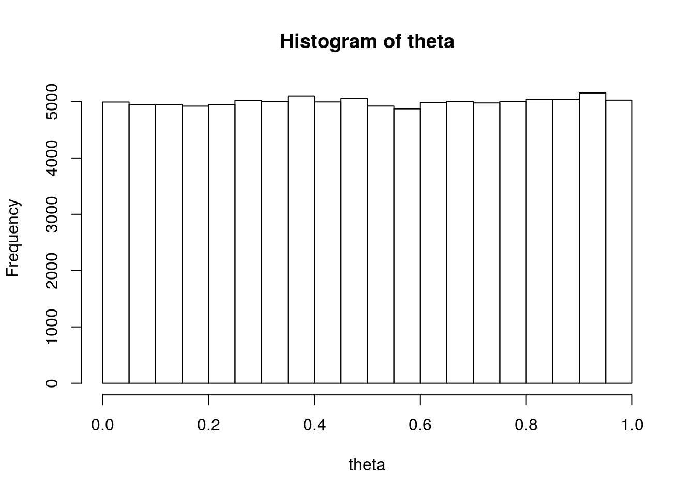
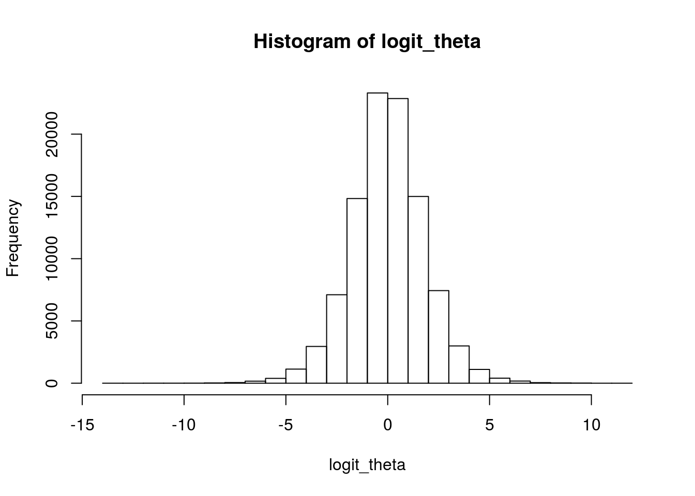

When changing variables, a Jacobian adjustment needs to be provided to account for the rate of change of the transform. Applying the adjustment ensures that inferences that are based on expectations over the posterior are invariant under reparameterizations. In contrast, the posterior mode changes as a result of the reparameterization. In this note, we use Stan to code a repeated binary trial model parameterized by chance of success, along with its reparameterization in terms of log odds in order to demonstrate the effect of the Jacobian adjustment on the Bayesian posterior and the posterior mode. We contrast the posterior mode to the maximum likelihood estimate, which, like the Bayesian estimates, is invariant under reparameterization. Along the way, we derive the logistic distribution by transforming a uniformly distributed variable.
Suppose \(\theta \in (0,1)\) represents a probability of success. Then the odds ratio is \(\frac{\theta}{1 - \theta} \in (0, \infty)\). For example, if \(\theta = 0.75\), the odds ratio is \(\frac{0.75}{1 - 0.75} = 3\), whereas if \(\theta = 0.25\), the odds ratio is \(\frac{0.25}{1 - 0.25} = \frac{1}{3}\). An odds ratio of \(3\) is conventionally written as \(3{:}1\) and pronounced as “three to one odds” (in favor of success), wheras an odds ratio of \(\frac{1}{3}\) is written as \(1{:}3\) and prononced “one to three odds” (in favor, or “three to one odds against”). If \(\theta = 0.5\), then the odds are \(1{:}1\), or “even”.
The log odds is just the logarithm of the odds, and the function \(\mathrm{logit}:(0,1) \rightarrow \mathbb{R}\) converts chance of success to log odds by \[ \mathrm{logit}(\theta) \ = \ \log \frac{\theta}{1 - \theta}. \] The nice thing about log odds is that they are symmetric around zero. If the chance of success is \(0.5\), the odds ratio is \(1\), and the log odds are \(0\). If the chance of success is \(0.75\) then the log odds are just \(\log 3\), or about \(1.10\), whereas if the chance of success is \(0.25\), the log odds are just \(\log \frac{1}{3} = -\log 3\), or about \(-1.10\). The log-odds transform has the symmetry \[ \mathrm{logit}(\theta) \ = \ -\mathrm{logit}(1 - \theta), \] which is useful for defining symmetric priors on log odds centered around zero.
Now suppose we have a uniformly-distributed random variable \(\theta \sim \mathsf{Uniform}(0,1)\) representing a chance of success. We can draw a large sample and plot a histogram.
theta <- runif(100000, 0, 1);
hist(theta, breaks=20);
It’s clear this is a nice uniform distribution. Now what happens if we log-odds transform the draws?
logit <- function(u) log(u / (1 - u));
logit_theta <- logit(theta);
hist(logit_theta, breaks=20);
Although the distribution of \(\theta\) is uniform, the distribution of \(\mathrm{logit}(\theta)\) is most certainly not. The non-linear change of variables stretches the distribution in some places more than other. As usual, this rate of change is quantified by the derivative, as we will see below in the definition of the Jacobian. In this case, we can define the density of \(\mathrm{logit}(z)\) analytically in terms of the density of \(\theta\) and its derivatives; the result is the logistic distribution, as shown below.
We will assume a very simple data set \(y_1,\ldots,y_N\), consisting of \(N\) repeated binary trials with a chance \(\theta \in [0, 1]\) of success. Let’s start by creating a data set of \(N = 10\) observations and parameter \(\theta = 0.3\).
set.seed(123);
theta <- 0.3;
N <- 10;
y <- rbinom(N, 1, theta);
y;## [1] 0 1 0 1 1 0 0 1 0 0Now the maximum likelihood estimate \(\theta^*\) for \(\theta\) in this case is easy to compute, being just the proportion of successes.
theta_star <- sum(y) / N;
theta_star;## [1] 0.4Don’t worry that \(\theta^*\) isn’t the same as \(\theta\); discrepancies arise due to sampling variation. Try several runs of the binomial generation and look at sum(y) to get a feeling for the variation due to sampling. If you want to know how to derive the maximum likelihood estimate here, differentiate the log density \(\log p(y \, | \, N, \theta)\) with respect to \(\theta\) and set it equal to zero and solve for \(\theta\); the solution is \(\theta^*\) as defined above (hint: convert to binomial form using the sum of \(y\) as a sufficient statistic and note that the binomial coefficients are constant).
The first model involves a direct parameterization of the joint density of the chance-of-success \(\theta\) and observed data \(y\). \[ p(\theta, y \, | \, N) \ \propto \ p(y \, | \, \theta, N) \, p(\theta) \] The likelihood is defined by independent Bernoulli draws, \[ p(y \, | \, \theta, N) \ = \ \prod_{n=1}^N \mathsf{Bernoulli}(y_n \, | \, \theta). \] We can assume a uniform prior for the sake of simplicity, but it is not a critical detail. \[ p(\theta) \ = \ \mathsf{Uniform}(\theta \, | \, 0, 1) \ = \ 1. \] The number of observations, \(N\), is not modeled, and so remains on the right-side of the conditioning bar in the equations.
The model is straightforward to program in Stan.
data {
int<lower=0> N;
int<lower=0, upper=1> y[N];
}
parameters {
real<lower=0, upper=1> theta;
}
model {
for (n in 1:N)
y[n] ~ bernoulli(theta);
theta ~ uniform(0, 1);
} It would be more efficient to vectorize the Bernoulli and drop the constant uniform, leaving just
model {
y ~ bernoulli(theta);
}The long form is used to illustrate the direct encoding of the model’s likelihood and prior.
First, we have to load the rstan package,
library(rstan);Then we can compile the model as follows.
model_prob <- stan_model("prob.stan");In file included from /home/aaronjg/R/x86_64-pc-linux-gnu-library/3.3/BH/include/boost/config.hpp:39:0,
from /home/aaronjg/R/x86_64-pc-linux-gnu-library/3.3/BH/include/boost/math/tools/config.hpp:13,
from /home/aaronjg/R/x86_64-pc-linux-gnu-library/3.3/StanHeaders/include/stan/math/rev/core/var.hpp:7,
from /home/aaronjg/R/x86_64-pc-linux-gnu-library/3.3/StanHeaders/include/stan/math/rev/core/gevv_vvv_vari.hpp:5,
from /home/aaronjg/R/x86_64-pc-linux-gnu-library/3.3/StanHeaders/include/stan/math/rev/core.hpp:12,
from /home/aaronjg/R/x86_64-pc-linux-gnu-library/3.3/StanHeaders/include/stan/math/rev/mat.hpp:4,
from /home/aaronjg/R/x86_64-pc-linux-gnu-library/3.3/StanHeaders/include/stan/math.hpp:4,
from /home/aaronjg/R/x86_64-pc-linux-gnu-library/3.3/StanHeaders/include/src/stan/model/model_header.hpp:4,
from file16175cac6580.cpp:8:
/home/aaronjg/R/x86_64-pc-linux-gnu-library/3.3/BH/include/boost/config/compiler/gcc.hpp:186:0: warning: "BOOST_NO_CXX11_RVALUE_REFERENCES" redefined
# define BOOST_NO_CXX11_RVALUE_REFERENCES
^
<command-line>:0:0: note: this is the location of the previous definitionWith a compiled model, we can calculate the posterior mode given the names of the data variables.
fit_pmode_prob <- optimizing(model_prob, data=c("N", "y"));Initial log joint probability = -7.06237
Optimization terminated normally:
Convergence detected: relative gradient magnitude is below tolerancefit_pmode_prob;$par
theta
0.4000028
$value
[1] -6.730117
$return_code
[1] 0As the prior is uniform in \(\theta\), the posterior mode for \(\theta\) is equal to maximum likelihood estimate \(\theta^*\) calculated analytically above.
Next, we can fit the same model using Stan’s default MCMC algorithm for Bayesian posteriors.
fit_bayes_prob <- sampling(model_prob, data=c("N", "y"),
iter=10000, refresh=5000);
print(fit_bayes_prob, probs=c(0.1, 0.5, 0.9));Inference for Stan model: prob.
4 chains, each with iter=10000; warmup=5000; thin=1;
post-warmup draws per chain=5000, total post-warmup draws=20000.
mean se_mean sd 10% 50% 90% n_eff Rhat
theta 0.41 0.00 0.14 0.24 0.41 0.59 6744 1
lp__ -8.67 0.01 0.74 -9.56 -8.38 -8.16 6722 1
Samples were drawn using NUTS(diag_e) at Tue Jun 27 21:15:11 2017.
For each parameter, n_eff is a crude measure of effective sample size,
and Rhat is the potential scale reduction factor on split chains (at
convergence, Rhat=1).The posterior mean is 0.42, not 0.4. The reason for this is that the posterior is not symmetric around its mode, but rather skewed to the right. In the case of this simple Bernoulli example with uniform prior, the posterior is available in closed form (because it is conjugate), with form \[ p(\theta \, | \, y) = \mathsf{Beta}(\theta \, | \, 1 + \mathrm{sum}(y), 1 + N - \mathrm{sum}(y)) \] where \(\mathrm{sum}(y) = \sum_{n=1}^N y_n\). In our case, with \(N = 10\) and \(\mathrm{sum}(y) = 4\), we get a posterior distribution \(p(\theta \, | \, y) = \mathsf{Beta}(\theta \, | \, 5, 7)\), and we know that if \(\theta \sim \mathsf{Beta}(5, 7)\), then \(\theta\) has a mean of\[ \bar{\theta} = \frac{5}{5 + 7} = 0.416666\cdots \approx 0.42, \] and a mode of \[ \theta^{M} = \frac{5 - 1}{5 + 7 - 2} = 0.40. \] In other words, Stan is producing the correct results here.
Model 1 used the chance of success \(\theta \in [0, 1]\) as a parameter. A popular alternative parameterization is the log odds, because it leads directly to the use of predictors in logistic regression. Model 2 uses a log-odds transformed parameter, but fails to include the Jacobian adjustment for the nonlinear change of variables.
data {
int<lower=0> N;
int<lower=0, upper=1> y[N];
}
parameters {
real alpha;
}
transformed parameters {
real<lower=0, upper=1> theta;
theta <- inv_logit(alpha);
}
model {
for (n in 1:N)
y[n] ~ bernoulli(theta);
theta ~ uniform(0, 1);
} The model is compiled as before.
model_logodds <- stan_model("logodds.stan");In file included from /home/aaronjg/R/x86_64-pc-linux-gnu-library/3.3/BH/include/boost/config.hpp:39:0,
from /home/aaronjg/R/x86_64-pc-linux-gnu-library/3.3/BH/include/boost/math/tools/config.hpp:13,
from /home/aaronjg/R/x86_64-pc-linux-gnu-library/3.3/StanHeaders/include/stan/math/rev/core/var.hpp:7,
from /home/aaronjg/R/x86_64-pc-linux-gnu-library/3.3/StanHeaders/include/stan/math/rev/core/gevv_vvv_vari.hpp:5,
from /home/aaronjg/R/x86_64-pc-linux-gnu-library/3.3/StanHeaders/include/stan/math/rev/core.hpp:12,
from /home/aaronjg/R/x86_64-pc-linux-gnu-library/3.3/StanHeaders/include/stan/math/rev/mat.hpp:4,
from /home/aaronjg/R/x86_64-pc-linux-gnu-library/3.3/StanHeaders/include/stan/math.hpp:4,
from /home/aaronjg/R/x86_64-pc-linux-gnu-library/3.3/StanHeaders/include/src/stan/model/model_header.hpp:4,
from file161734843ae2.cpp:8:
/home/aaronjg/R/x86_64-pc-linux-gnu-library/3.3/BH/include/boost/config/compiler/gcc.hpp:186:0: warning: "BOOST_NO_CXX11_RVALUE_REFERENCES" redefined
# define BOOST_NO_CXX11_RVALUE_REFERENCES
^
<command-line>:0:0: note: this is the location of the previous definitionBut now the compiler produces a warning to alert the user that they may need to apply a Jacobian adjustment because of the change of variables (we ignore the warning for now, but heed it in the next section).
DIAGNOSTIC(S) FROM PARSER:Warning (non-fatal):
Left-hand side of sampling statement (~) may contain a non-linear transform of a parameter or local variable.
If so, you need to call increment_log_prob() with the log absolute determinant of the Jacobian of the transform.
Left-hand-side of sampling statement:
theta ~ uniform(...)The fit proceeds as usual.
fit_pmode_logodds <- optimizing(model_logodds, data=c("N", "y"));Initial log joint probability = -7.57025
Optimization terminated normally:
Convergence detected: relative gradient magnitude is below tolerancefit_pmode_logodds;$par
alpha theta
-0.4054646 0.4000001
$value
[1] -6.730117
$return_code
[1] 0inv_logit <- function(alpha) 1 / (1 + exp(-alpha));
inv_logit(fit_pmode_logodds$par[["alpha"]])[1] 0.4000001Note that when we transform this incorrectly computed ‘posterior mode’ for log odds back to a chance-of-success, it is the same as before. But now consider what happens with the posterior.
print(fit_bayes_logodds, probs=c(0.1, 0.5, 0.9));Inference for Stan model: logodds.
4 chains, each with iter=10000; warmup=5000; thin=1;
post-warmup draws per chain=5000, total post-warmup draws=20000.
mean se_mean sd 10% 50% 90% n_eff Rhat
alpha -0.45 0.01 0.68 -1.31 -0.43 0.41 7079 1
theta 0.40 0.00 0.15 0.21 0.39 0.60 7127 1
lp__ -7.25 0.01 0.74 -8.12 -6.96 -6.74 8974 1
Samples were drawn using NUTS(diag_e) at Tue Jun 27 21:16:02 2017.
For each parameter, n_eff is a crude measure of effective sample size,
and Rhat is the potential scale reduction factor on split chains (at
convergence, Rhat=1).Model 2 uses the log odds as a parameterization, but because it does not apply an appropriate Jacobian adjustment, it produces the wrong Bayesian posterior. That means that optimization does not produce the correct posterior mode (aka, maximum a posteriori or MAP estimate).
The Jacobian for a univariate transform is the absolute derivative of the inverse of the transform; it’s called “Jacobian” because in the general multivariate case, it’s the absolute determinant of the Jacobian matrix of the transform. More concretely, suppose we have a variable \(\theta\) distributed as \(p(\theta)\), and I want to consider the distribution of a variable \(\alpha = f(\theta)\). To preserve probability mass (intervals in the univariate setting) under change of variables, the resulting density is \[ p(\alpha) \ = \ p(f^{-1}(\alpha)) \, \left| \frac{d}{d\alpha} f^{-1}(\alpha) \right|, \] where the absolute value term is the Jacobian adjustment.
The inverse of the logit function, \(\mathrm{logit}^{-1} : \mathbb{R} \rightarrow (0,1)\), is known as the logistic sigmoid function, and defined as follows. \[ \mathrm{logit}^{-1}(\alpha) \ = \ \frac{1}{1 + \exp(-\alpha)}. \]
In our particular case, where \(f = \mathrm{logit}\), the Jacobian adjustment is \[ \left| \frac{d}{d\alpha} \mathrm{logit}^{-1}(\alpha) \right| \ = \ \mathrm{logit}^{-1}(\alpha) \times (1 - \mathrm{logit}^{-1}(\alpha)). \] Writing it out in full, \[ p(\alpha) \ = \ p(\mathrm{logit}^{-1}(\alpha)) \times \mathrm{logit}^{-1}(\alpha) \times (1 - \mathrm{logit}^{-1}(\alpha)). \]
The logit function and its inverse are built into Stan as logit and inv_logit; Stan also provides many compound functions involving the log odds transform.
In this section, we apply the Jacobian adjustment we derived in the previous section, and see what it does to the posterior mode, posterior mean, and posterior quantiles (median or intervals).
The last model we consider is the version of Model 2 with the appropriate Jacobian correction so that \(\theta\) and \(\mathrm{logit}^{-1}(\alpha)\) have the same distribution. The Jacobian was derived in the previous section, and is coded up directly in Stan.
data {
int<lower=0> N;
int<lower=0, upper=1> y[N];
}
parameters {
real alpha;
}
transformed parameters {
real<lower=0, upper=1> theta;
theta <- inv_logit(alpha);
}
model {
for (n in 1:N)
y[n] ~ bernoulli(theta);
theta ~ uniform(0, 1);
increment_log_prob(log(theta) + log(1 - theta));
} This is not the most efficient Stan model; the likelihood may be implemented with bernoulli_logit rather than an explicit application of inv_logit, the likelihood may be vectorized, the constant uniform may be dropped, and the efficient and stable log_inv_logit and log1m_inv_logit may be used for the Jacobian calculation. The more arithmetically stable form (and the more efficient form if theta is not available) is as follows.
model {
y ~ bernoulli_logit(alpha);
increment_log_prob(log_inv_logit(alpha));
increment_log_prob(log1m_inv_logit(alpha));
}The steps are exactly the same as before.
model_logodds_jac <- stan_model("logodds-jac.stan");In file included from /home/aaronjg/R/x86_64-pc-linux-gnu-library/3.3/BH/include/boost/config.hpp:39:0,
from /home/aaronjg/R/x86_64-pc-linux-gnu-library/3.3/BH/include/boost/math/tools/config.hpp:13,
from /home/aaronjg/R/x86_64-pc-linux-gnu-library/3.3/StanHeaders/include/stan/math/rev/core/var.hpp:7,
from /home/aaronjg/R/x86_64-pc-linux-gnu-library/3.3/StanHeaders/include/stan/math/rev/core/gevv_vvv_vari.hpp:5,
from /home/aaronjg/R/x86_64-pc-linux-gnu-library/3.3/StanHeaders/include/stan/math/rev/core.hpp:12,
from /home/aaronjg/R/x86_64-pc-linux-gnu-library/3.3/StanHeaders/include/stan/math/rev/mat.hpp:4,
from /home/aaronjg/R/x86_64-pc-linux-gnu-library/3.3/StanHeaders/include/stan/math.hpp:4,
from /home/aaronjg/R/x86_64-pc-linux-gnu-library/3.3/StanHeaders/include/src/stan/model/model_header.hpp:4,
from file161769692b97.cpp:8:
/home/aaronjg/R/x86_64-pc-linux-gnu-library/3.3/BH/include/boost/config/compiler/gcc.hpp:186:0: warning: "BOOST_NO_CXX11_RVALUE_REFERENCES" redefined
# define BOOST_NO_CXX11_RVALUE_REFERENCES
^
<command-line>:0:0: note: this is the location of the previous definitionfit_pmode_logodds_jac <- optimizing(model_logodds_jac, data=c("N", "y"));Initial log joint probability = -9.01541
Optimization terminated normally:
Convergence detected: relative gradient magnitude is below tolerancefit_pmode_logodds_jac;$par
alpha theta
-0.3364722 0.4166667
$value
[1] -8.150319
$return_code
[1] 0inv_logit(fit_pmode_logodds_jac$par[["alpha"]])[1] 0.4166667Note that this answer is different from the result obtained from model 1, demonstrating that the posterior mode depends on parameterization. But now consider what happens in the Bayesian setting.
print(fit_bayes_logodds_jac, probs=c(0.1, 0.5, 0.9));Inference for Stan model: logodds-jac.
4 chains, each with iter=10000; warmup=5000; thin=1;
post-warmup draws per chain=5000, total post-warmup draws=20000.
mean se_mean sd 10% 50% 90% n_eff Rhat
alpha -0.36 0.01 0.60 -1.14 -0.36 0.40 7799 1
theta 0.42 0.00 0.14 0.24 0.41 0.60 7869 1
lp__ -8.66 0.01 0.71 -9.53 -8.38 -8.16 7653 1
Samples were drawn using NUTS(diag_e) at Tue Jun 27 21:16:53 2017.
For each parameter, n_eff is a crude measure of effective sample size,
and Rhat is the potential scale reduction factor on split chains (at
convergence, Rhat=1).All is now well again after the Jacobian adjustment, with the posterior distribution of \(\theta\) matching that of the original model, thus preserving Bayesian inferences, such as posterior predictions for new data points. Similarly, the posterior mean (estimate minimizing expected square error) and median (estimate minimizing expected absolute error) are preserved.
Unlike the posterior mean, the posterior mode changed when we reparameterized the model. This highlights that posterior modes (i.e., MAP estimates) are not true Bayesian quantities, but mere side effects of parameterizations. In contrast, the Maximum Likehood Estimate, like the Bayesian quantities, is indenpendent of the parameterization of theta.
Suppose \(\theta \sim \mathsf{Uniform}(0,1)\). Then \(\mathrm{logit}(\theta)\) has a unit logistic distribution. We have already derived the probability density function, which is simply the uniform probability distribution times the Jacobian, or in symbols, \[ \mathsf{Logistic}(y) \ = \ \mathrm{logit}^{-1}(y) \times (1 - \mathrm{logit}^{-1}(y)) \ = \ \frac{\exp(-y)}{(1 + \exp(-y))^2}. \]
It should come as no surprise at this point that the logistic sigmoid \(\mathrm{logit}^{-1}(\alpha)\) is the cumulative distribution function for the logistic distribution, because differentiating it produces the logistic density function.
As with other distributions, the unit form of the distribution may be translated by a location parameter \(\mu\) and scaled by a parameter \(\sigma\), to produce the general logistic distribution \[ \mathsf{Logistic}(y \, | \, \mu, \sigma) \ = \ \mathsf{Logistic}\left( \frac{y - \mu}{\sigma} \right). \] We’ll leave it as an exercise for the reader to work out the algebra and show this is the same as the definition in the Wikipedia.
To sum up, here’s a handy table that contrasts the results.
| Parameterization | Posterior Mode | Posterior Mean |
|---|---|---|
| chance of success | 0.40 | 0.42 |
| log odds without Jacobian | 0.40 | 0.40 |
| log odds with Jacobian | 0.42 | 0.42 |
The moral of the story is that full Bayesian inference is insensitive to parameterization as long as the approprieate Jacobian adjustment is applied. In contrast, posterior modes (i.e., maximum a posteriori estimates) do change under reparameterization, and thus are no true Bayesian quantity.
Thanks to Stijn de Waele for corrections and clarifications on the first version of this document.
The code in this document is copyrighted by Columbia University and licensed under the new BSD (3-clause) license. The text is copyrighted by Bob Carpenter and licensed under CC-BY 4.0.